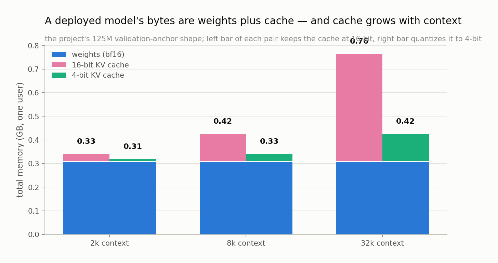
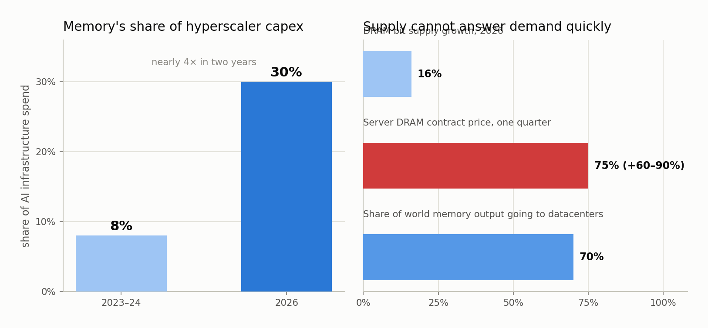

Chapter 1 — The Memory Wall#
By the end of this chapter you will understand why a research project about training smaller-precision language models exists at all. You will be able to explain the difference between a machine that runs out of arithmetic and a machine that runs out of memory, why 2026's AI buildout is short of the second kind of resource rather than the first, and why the industry's standard remedy — shrink the model after you finish training it — solves the wrong problem. You will also see why this particular project was deliberately built to run on one desktop GPU.
Two ways to run out#
Imagine a restaurant kitchen. The chef is extraordinarily fast: give her ingredients and she produces plates faster than anyone can eat them. But the pantry is down a narrow corridor, and every ingredient has to be carried through by hand. When the recipes are complicated but use few ingredients, the chef is the limit and the corridor sits idle. When the recipes are simple but each dish needs ingredients from forty different shelves, the chef waits while runners jam the corridor.
Computers have exactly these two failure modes, and they have names. A job is compute-bound when the processor's arithmetic units are the bottleneck: there is more math to do than the chip can do per second. The unit of account here is the FLOP, a floating-point operation, one multiply or one add on a decimal number. A job is memory-bound when the processor is mostly idle, waiting for numbers to arrive from memory. Here the unit of account is the byte: eight bits, the standard chunk in which computers store and move data.
For most of the deep learning era the interesting constraint was compute: bigger clusters, faster chips, more matrix multiplications per dollar. That is shifting. Training still eats FLOPs, but serving a trained model, one token at a time, is close to the worst case for the corridor. To produce a single next word, the machine reads essentially every one of the model's stored numbers out of memory and does only about two arithmetic operations with each. Two operations per byte moved is a terrible ratio for hardware that (illustratively, using round numbers typical of modern accelerators) can do a few hundred operations in the time it takes to fetch one byte. The chef waits.
Where the bytes live#
The memory in question has a specific name. DRAM (dynamic random-access memory) is the standard main memory in every computer: the "16 GB of RAM" on a laptop spec sheet. It is dense and comparatively cheap, but it sits at the far end of the corridor. HBM (high-bandwidth memory) is a variant built by stacking DRAM dies vertically and wiring them to the processor through a very wide connection, which widens the corridor enormously. AI accelerators use HBM because the whole point of the machine is to stream billions of numbers past the arithmetic units without stalling.
This is why a model's size in bytes is a hard gate rather than an accounting detail. A model's weights (the stored numbers it learned during training, defined properly in Chapter 2) must fit in the memory attached to the processor, or the model does not run. That single number decides whether something lives on a phone with 8 GB of shared RAM, on a laptop, on one datacenter accelerator, on eight lashed together, or nowhere you own.
And weights are only part of the bill. Every user currently being served has a KV cache: a scratchpad holding intermediate values for every token of their conversation so far, so the model does not recompute the whole history for each new word. It grows linearly with conversation length and with the number of simultaneous users. Take the 125M-parameter model this project uses as its validation anchor. Its weights in 16-bit format come to 305 MB. Its KV cache, from the project's own formula, costs 13,824 bytes per token of context: about 14 MB at 1,024 tokens of conversation, 113 MB at 8,192, and 453 MB at 32,768. Somewhere around 22,000 tokens, one user's scratchpad outweighs the entire model. That crossover moves "how big is this model" from a static number to a budget you have to allocate.

The 2026 numbers#
None of this is speculative. As of 2026 the big five hyperscalers have committed roughly $600–630 billion of capital expenditure, around 75% of it AI infrastructure. Within that spend, memory has grown from about 8% in 2023–24 to roughly 30% in 2026. Nearly a third of the largest capital program in the history of computing is going to the corridor rather than the chef.
The supply side explains why. Datacenters are absorbing about 70% of world memory output through 2027, and the three DRAM manufacturers are diverting silicon wafers from ordinary memory toward HBM, because one HBM3E module sells for roughly $60–100 against $5–10 for an equivalent amount of DDR5. Rational for them, a disaster for everyone else buying memory. Server DRAM contract prices jumped about 60–90% in a single quarter, 2026 DRAM bit supply is growing only about 16% against demand that can absorb all of it, and HBM order backlogs run roughly a year. Estimates of when this normalizes range from Intel's 2028 to SK Hynix warning it could outlast the decade.

The standard fix, and why it is a patch#
The field already has an answer to byte pressure, and it is nearly universal: train the model in 16-bit precision, then compress the finished artifact. This is post-training quantization (PTQ), and "quantization" simply means storing each weight with fewer bits than the original format, so that a number which took 16 bits now takes 8, or 4, or fewer. Chapter 5 covers how that actually works. The appeal is obvious: the training pipeline does not change at all, and the deployed file gets smaller.
The LOGOS project's founding claim is that this is a patch rather than a solution, for three reasons that stack.
First, it falls off a cliff exactly where the savings are. PTQ holds up well at 8 bits and acceptably at 4. Below 4 bits, quality degrades sharply. But the regime that yields a 4× to 10× reduction in footprint, the reduction that changes what hardware a model can live on, is precisely the sub-4-bit regime PTQ cannot reach. The technique works best where it matters least.
Second, it changes nothing upstream. PTQ is applied, by definition, after training. You still paid the full-precision memory bill for the entire pretraining run: full-precision weights, optimizer state, and gradients, held in the scarce memory for weeks. Compression applied at the end cannot retroactively fix the economics of the middle.
Third, and most importantly, it optimizes the wrong objective. Squeezing a model that was designed, initialized, and trained for 16-bit arithmetic down into 4 bits asks: how little damage can we do? Its best possible outcome is "almost as good as the model we started with." The question a byte-constrained world actually poses is different: what is the best model that fits the byte budget in the first place? Those are not the same question, and evidence keeps accumulating (BitNet, ParetoQ, Spectra) that models trained low-bit from scratch answer the second one better than models patched down to low-bit answer the first.
The missing design rule#
If bytes are the scarce resource, compression has to move into pretraining. But native low-bit training is missing something the field takes for granted at full precision: a rule for how to spend the budget.
In 2022 the Chinchilla paper gave the field a rule for splitting a compute budget between model size and training data. Nobody has published the deployment version. Given a memory budget in bytes, how should you allocate parameter count (N), weight precision, KV-cache precision, and training tokens (D) to get the best model? That law is what LOGOS sets out to fit empirically, across five weight precisions, and then to validate by committing predictions to a public repository before running the experiments that would test them. Nothing in this book will describe that law as finished, because it is not: the grid is still running, the fit is not yet made, and the validation anchors have not been trained.
The second scarcity#
There is a second argument folded into how this project is built. Byte scarcity does not only ration who gets to deploy AI; it rations who gets to study it. When accelerators are allocation-gated and memory is the constraint on those accelerators, research capacity concentrates in the few organizations holding allocations.
LOGOS is a deliberate counter-demonstration. The entire experimental grid runs on a single consumer desktop GPU, using about 830 local GPU-hours plus a hard cap of $100 of cloud compute reserved exclusively for the final validation runs. If a real scaling law can be fitted, blind-validated, and published from one desk, that is part of the argument: the same scarcity that motivates memory-optimal training also rations who gets to do the research, and memory-optimal training is one of the few ways around both.
What to remember#
Computers fail in two distinct ways, and AI's binding constraint is moving from the compute kind to the memory kind, because serving a model reads enormous quantities of stored numbers while doing very little arithmetic with each one. That shift is visible in the 2026 economics, where memory has gone from about 8% to about 30% of hyperscaler capital spending and supply is not expected to normalize before 2028 at the earliest. A model's size in bytes is therefore a hard gate on where it can run, and the bill has two parts: fixed weights plus a KV cache that grows with every token of every user's conversation. The industry's standard response, quantizing after training, fails on three counts at once: it breaks below 4 bits where the real savings live, it does nothing about the memory spent during training, and it minimizes damage rather than maximizing quality per byte. Moving compression into pretraining is the alternative, it requires a design rule that does not yet exist, and building that rule on one desktop GPU is a second claim about who gets to do this kind of work.